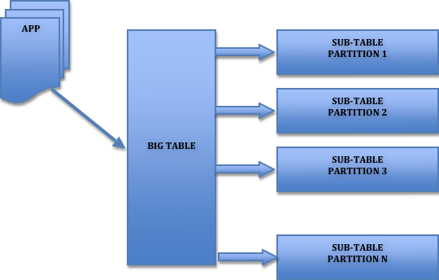
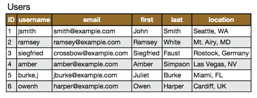
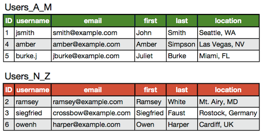
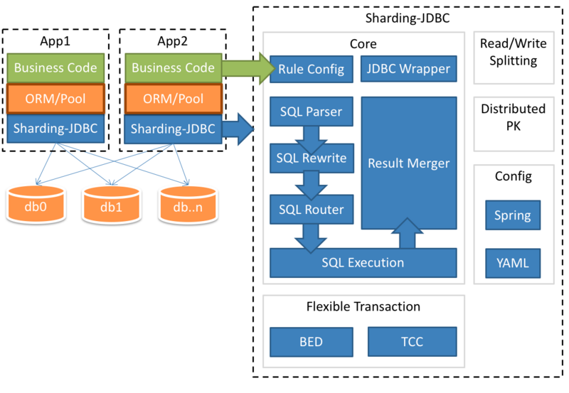
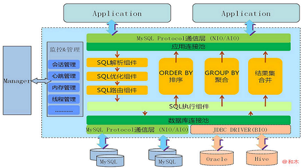

前言
原文来自 Segmentfault：MySQL 大表优化方案
当 MySQ L单表记录数过大时，增删改查性能都会急剧下降，可以参考以下优化手段：
- 单表优化
- 读写分离
- 缓存
- 拆分
- NoSQL
单表优化
除非单表数据未来会一直不断上涨，否则不要一开始就考虑拆分，拆分会带来逻辑、部署、运维的各种复杂度，一般以整型值为主的表在千万级以下，字符串为主的表在五百万以下是没有太大问题的。
字段
尽量使用 TINYINT、SMALLINT、MEDIUM_INT 作为整数类型而非 INT，如果非负则加上 UNSIGNED。
VARCHAR 的长度只分配真正需要的空间。
使用枚举或整数代替字符串类型。
尽量使用 TIMESTAMP 而非 DATETIME。
单表不要有太多字段，建议在20以内。
避免使用 NULL 字段，很难查询优化且占用额外索引空间。
用整型来存 IP【使用INET_ATON(EXPR)、INET_NTOA（EXPR）】。
索引
索引并不是越多越好，要根据查询有针对性的创建，考虑在WHERE和ORDER BY命令上涉及的列建立索引，可根据EXPLAIN来查看是否用了索引还是全表扫描。
应尽量避免在WHERE子句中对字段进行 NULL 值判断，否则将导致引擎放弃使用索引而进行全表扫描。
值分布很稀少的字段不适合建索引，例如”性别”这种只有两三个值的字段。
字符字段只建前缀索引。
字符字段最好不要做主键。
不用外键，由程序保证约束。
尽量不用 UNIQUE，由程序保证约束。
使用多列索引时主意顺序和查询条件保持一致，同时删除不必要的单列索引。
SQL
可通过开启慢查询日志来找出较慢的 SQL。
不做列运算：SELECT id WHERE age + 1 = 10，任何对列的操作都将导致表扫描，它包括数据库教程函数、计算表达式等等，查询时要尽可能将操作移至等号右边。
SQL 语句尽可能简单：一条 SQL 只能在一个 CPU 运算；大语句拆小语句，减少锁时间；一条大 SQL 可以堵死整个库。
不用 SELECT *。
OR 改写成 IN：OR 的效率是 n 级别，IN 的效率是 log(n) 级别， IN 的个数建议控制在200以内。
不用函数和触发器，在应用程序实现。
避免 %xxx 查询。
少用 JOIN。
使用同类型进行比较，比如用’123’和’123’比，123和123比。
尽量避免在WHERE子句中使用 != 或 <> 操作符，否则将引擎放弃使用索引而进行全表扫描。
对于连续数值，使用 BETWEEN 不用 IN：SELECT id FROM t WHERE num BETWEEN 1 AND 5。
列表数据不要拿全表，要使用 LIMIT 来分页，每页数量也不要太大。
引擎
目前广泛使用的是 MyISAM 和 InnoDB 两种引擎。
MyISAM 适合 SELECT 密集型的表，而 InnoDB 适合 INSERT 和 UPDATE 密集型的表。
MyISAM
MyISAM 引擎是 MySQL 5.1 及之前版本的默认引擎，特点：
不支持行锁，读取时对需要读到的所有表加锁，写入时则对表加排它锁
不支持事务
不支持外键
不支持崩溃后的安全恢复
在表有读取查询的同时，支持往表中插入新纪录
支持BLOB和TEXT的前500个字符索引，支持全文索引
支持延迟更新索引，极大提升写入性能
对于不会进行修改的表，支持压缩表，极大减少磁盘空间占用
InnoDB
InnoDB 是 MySQL 5.5 之后的默认引擎，特点：
支持行锁，采用MVCC来支持高并发
支持事务
支持外键
支持崩溃后的安全恢复
不支持全文索引
系统调优参数
可以使用下面几个工具来做基准测试：
sysbench：一个模块化，跨平台以及多线程的性能测试工具
iibench-mysql：基于 Java 的 MySQL/Percona/MariaDB 索引进行插入性能测试工具
tpcc-mysql：Percona 开发的 TPC-C 测试工具
具体的调优参数内容较多，具体可参考官方文档，这里介绍一些比较重要的参数：
back_log：出在 MySQL 暂停时回答新请求之前的短时间内多少个请求可以被存在堆栈中。也就是说，如果 MySql 的连接数据达到 max_connections 时，新来的请求将会被存在堆栈中，以等待某一连接释放资源，该堆栈的数量即 back_log，如果等待连接的数量超过 back_log，将不被授予连接资源。【可以从默认的50升至500】
wait_timeout：数据库连接闲置时间，闲置连接会占用内存资源。【可以从默认的8小时减到半小时】
max_user_connection: 最大连接数，默认为0无上限，最好设一个合理上限。
thread_concurrency：并发线程数，设为CPU核数的两倍。
skip_name_resolve：禁止对外部连接进行DNS解析，消除DNS解析时间，但需要所有远程主机用IP访问。
key_buffer_size：索引块的缓存大小，增大可提升索引处理速度，对 MyISAM 表性能影响最大。对于内存4G左右，可设为 256M 或 384M，通过查询
show status like 'key_read%'，保证key_reads / key_read_requests在 0.1% 以下最好。innodb_buffer_pool_size：缓存数据块和索引块，对 InnoDB 表性能影响最大。通过查询
show status like 'Innodb_buffer_pool_read%'，保证(Innodb_buffer_pool_read_requests – Innodb_buffer_pool_reads) / Innodb_buffer_pool_read_requests越高越好。innodb_additional_mem_pool_size：InnoDB 存储引擎用来存放数据字典信息以及一些内部数据结构的内存空间大小，当数据库对象非常多的时候，适当调整该参数的大小以确保所有数据都能存放在内存中提高访问效率，当过小的时候，MySQL 会记录 Warning 信息到数据库的错误日志中，这时就需要该调整这个参数大小。
innodb_log_buffer_size：InnoDB 存储引擎的事务日志所使用的缓冲区，一般来说不建议超过32MB。
query_cache_size：缓存 MySQL 中的 ResultSet，也就是一条 SQL 语句执行的结果集，所以仅仅只能针对 select 语句。当某个表的数据有任何变化，都会导致所有引用了该表的 select 语句在 Query Cache 中的缓存数据失效。所以，当我们的数据变化非常频繁的情况下，使用 Query Cache 可能会得不偿失。根据命中率
Qcache_hits / (Qcache_hits + Qcache_inserts) * 100进行调整，一般不建议太大，256MB可能已经差不多了，大型的配置型静态数据可适当调大，可以通过命令show status like 'Qcache_%'查看目前系统 Query Cache 使用大小。read_buffer_size：MySql 读入缓冲区大小。对表进行顺序扫描的请求将分配一个读入缓冲区，MySql 会为它分配一段内存缓冲区。如果对表的顺序扫描请求非常频繁，可以通过增加该变量值以及内存缓冲区大小提高其性能。
sort_buffer_size：MySql 执行排序使用的缓冲大小。如果想要增加 ORDER BY 的速度，首先看是否可以让 MySQL 使用索引而不是额外的排序阶段。如果不能，可以尝试增加 sort_buffer_size 变量的大小。
read_rnd_buffer_size：MySql 的随机读缓冲区大小。当按任意顺序读取行时(例如，按照排序顺序)，将分配一个随机读缓存区。进行排序查询时，MySql 会首先扫描一遍该缓冲，以避免磁盘搜索，提高查询速度，如果需要排序大量数据，可适当调高该值。但 MySql 会为每个客户连接发放该缓冲空间，所以应尽量适当设置该值，以避免内存开销过大。
record_buffer：每个进行一个顺序扫描的线程为其扫描的每张表分配这个大小的一个缓冲区。如果你做很多顺序扫描，可能想要增加该值。
thread_cache_size：保存当前没有与连接关联但是准备为后面新的连接服务的线程，可以快速响应连接的线程请求而无需创建新的。
table_cache：类似于 thread_cache_size，但用来缓存表文件，对 InnoDB 效果不大，主要用于 MyISAM。
升级硬件
根据 MySQL 是 CPU 密集型还是 I/O 密集型，通过提升 CPU 和内存、使用 SSD，都能显著提升 MySQL 性能。
读写分离
也是目前常用的优化，从库读主库写，一般不要采用双主或多主引入很多复杂性，尽量采用文中的其他方案来提高性能。同时目前很多拆分的解决方案也兼顾了读写分离。
缓存
缓存可以发生在这些层次：
MySQL 内部：在系统调优参数介绍了相关设置。
数据访问层：比如 MyBatis 针对 SQL 语句做缓存，而 Hibernate 可以精确到单个记录，这里缓存的对象主要是持久化对象 Persistence Object。
应用服务层：这里可以通过编程手段对缓存做到更精准的控制和更多的实现策略，这里缓存的对象是数据传输对象 Data Transfer Object。
Web 层：针对 Web 页面做缓存。
浏览器客户端：用户端的缓存。
可以根据实际情况在一个层次或多个层次结合加入缓存。这里重点介绍下服务层的缓存实现，目前主要有两种方式：
直写式（Write Through）：在数据写入数据库后，同时更新缓存，维持数据库与缓存的一致性。这也是当前大多数应用缓存框架如 Spring Cache 的工作方式。这种实现非常简单，同步好，但效率一般。
回写式（Write Back）：当有数据要写入数据库时，只会更新缓存，然后异步批量的将缓存数据同步到数据库上。这种实现比较复杂，需要较多的应用逻辑，同时可能会产生数据库与缓存的不同步，但效率非常高。
表分区
MySQL 有一种早期的简单的分区实现：合并表（merge table），限制较多且缺乏优化，不建议使用，应该用新的分区机制来替代。
MySQL 5.1 引入的分区是一种简单的水平拆分，用户需要在建表的时候加上分区参数，对应用是透明的无需修改代码。
对用户来说，分区表是一个独立的逻辑表，但是底层由多个物理子表组成，实现分区的代码实际上是通过对一组底层表的对象封装，但对 SQL 层来说是一个完全封装底层的黑盒子。MySQL 实现分区的方式也意味着索引也是按照分区的子表定义，没有全局索引。

用户的 SQL 语句是需要针对分区表做优化，SQL 条件中要带上分区条件的列，从而使查询定位到少量的分区上，否则就会扫描全部分区，可以通过 EXPLAIN PARTITIONS 来查看某条 SQL 语句会落在那些分区上，从而进行 SQL 优化，如下5条记录落在两个分区上：
1 | mysql> explain partitions select count(1) from user_partition where id in (1,2,3,4,5)\G |
分区的好处：
可以让单表存储更多的数据。
分区表的数据更容易维护，可以通过清除整个分区来批量删除大量数据，也可以增加新的分区来支持新插入的数据。另外，还可以对一个独立分区进行优化、检查、修复等操作。
部分查询能够从查询条件确定只落在少数分区上，速度会很快。
分区表的数据还可以分布在不同的物理设备上，从而高效利用多个硬件设备。
可以使用分区表赖避免某些特殊瓶颈，例如 InnoDB 单个索引的互斥访问、ext3 文件系统的 inode 锁竞争。
可以备份和恢复单个分区。
分区的限制和缺点：
一个表最多只能有1024个分区。
如果分区字段中有主键或者唯一索引的列，那么所有主键列和唯一索引列都必须包含进来。
分区表无法使用外键约束。
NULL 值会使分区过滤无效。
所有分区必须使用相同的存储引擎。
分区的类型：
RANGE 分区：基于属于一个给定连续区间的列值，把多行分配给分区。
LIST 分区：类似于按 RANGE 分区，区别在于 LIST 分区是基于列值匹配一个离散值集合中的某个值来进行选择。
HASH 分区：基于用户定义的表达式的返回值来进行选择的分区，该表达式使用将要插入到表中的这些行的列值进行计算。这个函数可以包含 MySQL 中有效的、产生非负整数值的任何表达式。
KEY 分区：类似于按 HASH 分区，区别在于 KEY 分区只支持计算一列或多列，且 MySQL 服务器提供其自身的哈希函数。必须有一列或多列包含整数值。
分区适合的场景有：
- 最适合的场景数据的时间序列性比较强，则可以按时间来分区：（查询时加上时间范围条件效率会非常高，同时对于不需要的历史数据能很容易地批量删除）
1 | CREATE TABLE members ( |
- 如果数据有明显的热点，而且除了这部分数据，其他数据很少被访问到，那么可以将热点数据单独放在一个分区，让这个分区的数据能够有机会都缓存在内存中，查询时只访问一个很小的分区表，能够有效使用索引和缓存。
垂直拆分
垂直分库是根据数据库里面的数据表的相关性进行拆分。垂直分表是对数据表进行垂直拆分的一种方式，常见的是把一个多字段的大表按常用字段和非常用字段进行拆分，每个表里面的数据记录数一般情况下是相同的，只是字段不一样，使用主键关联。
比如：一个数据库里面既存在用户数据，又存在订单数据，那么垂直拆分可以把用户数据放到用户库、把订单数据放到订单库。
比如，原始的用户表：

垂直拆分后：

优点
可以使得行数据变小，一个数据块（Block）就能存放更多的数据，在查询时就会减少 I/O 次数(每次查询时读取的 Block 就少)。
可以达到最大化利用 Cache 的目的，具体在垂直拆分的时候可以将不常变的字段放一起，将经常改变的放一起。
数据维护简单。
缺点
主键出现冗余，需要管理冗余列。
会引起表连接 JOIN 操作（增加 CPU 开销）可以通过在业务服务器上进行 JOIN 来减少数据库压力。
依然存在单表数据量过大的问题（需要水平拆分）。
事务处理复杂。
水平拆分
水平拆分是通过某种策略将数据分片来存储，分库内分表和分库两部分，每片数据会分散到不同的 MySQL 表或库，达到分布式的效果，能够支持非常大的数据量。表分区本质上也是一种特殊的库内分表。
库内分表，仅仅是单纯的解决了单一表数据过大的问题，由于没有把表的数据分布到不同的机器上，因此对于减轻 MySQL 服务器的压力来说，并没有太大的作用，大家还是竞争同一个物理机上的 IO、CPU、网络，这个就要通过分库来解决
前面的用户表如果进行水平拆分（按用户名首字母）：

实际情况中往往会是垂直拆分和水平拆分的结合，即将 Users_A_M 和 Users_N_Z 再拆成 Users 和 UserExtras，这样一共四张表。
优点
不存在单库大数据和高并发的性能瓶颈。
应用端改造较少。
提高了系统的稳定性和负载能力。
缺点
分片事务一致性难以解决。
跨节点 Join 性能差，逻辑复杂。
数据多次扩展难度跟维护量极大。
分片原则
能不分就不分，参考单表优化。
分片数量尽量少，分片尽量均匀分布在多个数据结点上，因为一个查询 SQL 跨分片越多，则总体性能越差，虽然要好于所有数据在一个分片的结果，只在必要的时候进行扩容，增加分片数量。
分片规则需要慎重选择做好提前规划，分片规则的选择，需要考虑数据的增长模式，数据的访问模式，分片关联性问题，以及分片扩容问题，最近的分片策略为范围分片，枚举分片，一致性 Hash 分片，这几种分片都有利于扩容。
尽量不要在一个事务中的 SQL 跨越多个分片，分布式事务一直是个不好处理的问题。
查询条件尽量优化，尽量避免 Select * 的方式，大量数据结果集下，会消耗大量带宽和 CPU 资源，查询尽量避免返回大量结果集，并且尽量为频繁使用的查询语句建立索引。
通过数据冗余和表分区赖降低跨库 Join 的可能。
这里特别强调一下分片规则的选择问题，如果某个表的数据有明显的时间特征，比如订单、交易记录等，则他们通常比较合适用时间范围分片，因为具有时效性的数据，我们往往关注其近期的数据，查询条件中往往带有时间字段进行过滤，比较好的方案是，当前活跃的数据，采用跨度比较短的时间段进行分片，而历史性的数据，则采用比较长的跨度存储。
总体上来说，分片的选择是取决于最频繁的查询 SQL 的条件，因为不带任何 Where 语句的查询 SQL，会遍历所有的分片，性能相对最差，因此这种 SQL 越多，对系统的影响越大，所以我们要尽量避免这种 SQL 的产生。
解决方案
由于水平拆分牵涉的逻辑比较复杂，当前也有了不少比较成熟的解决方案。这些方案分为两大类：客户端架构和代理架构。
客户端架构
通过修改数据访问层，如 JDBC、Data Source、MyBatis，通过配置来管理多个数据源，直连数据库，并在模块内完成数据的分片整合，一般以 Jar 包的方式呈现。
客户端架构例子：

可以看到分片的实现是和应用服务器在一起的，通过修改 Spring JDBC 层来实现。
优点：
应用直连数据库，降低外围系统依赖所带来的宕机风险。
集成成本低，无需额外运维的组件。
缺点：
限于只能在数据库访问层上做文章，扩展性一般，对于比较复杂的系统可能会力不从心。
将分片逻辑的压力放在应用服务器上，造成额外风险。
代理架构
通过独立的中间件来统一管理所有数据源和数据分片整合，后端数据库集群对前端应用程序透明，需要独立部署和运维代理组件。
代理架构例子：

代理组件为了分流和防止单点，一般以集群形式存在，同时可能需要 Zookeeper 之类的服务组件来管理。
优点：
能够处理非常复杂的需求，不受数据库访问层原来实现的限制，扩展性强。
对于应用服务器透明且没有增加任何额外负载。
缺点：
需部署和运维独立的代理中间件，成本高。
应用需经过代理来连接数据库，网络上多了一跳，性能有损失且有额外风险。
NoSQL
在 MySQL 上做 Sharding 是一种戴着镣铐的跳舞，事实上很多大表本身对 MySQL 这种 RDBMS 的需求并不大，并不要求 ACID，可以考虑将这些表迁移到 NoSQL，彻底解决水平扩展问题，例如：
日志类、监控类、统计类数据。
非结构化或弱结构化数据。
对事务要求不强，且无太多关联操作的数据。